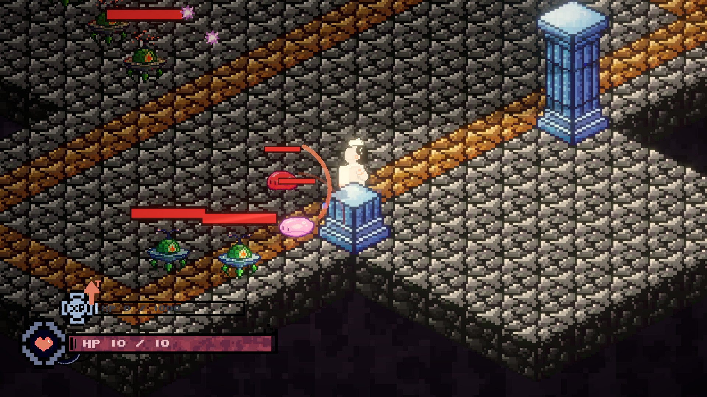
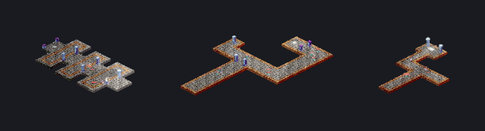
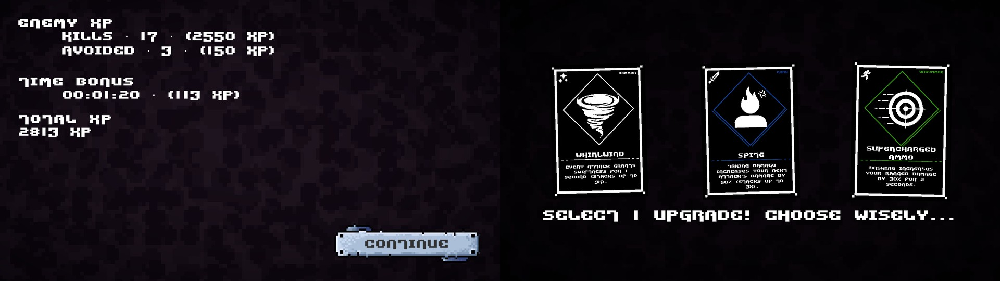
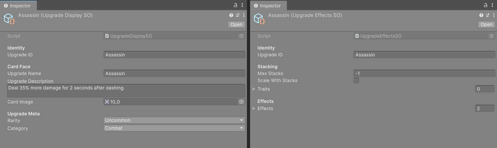
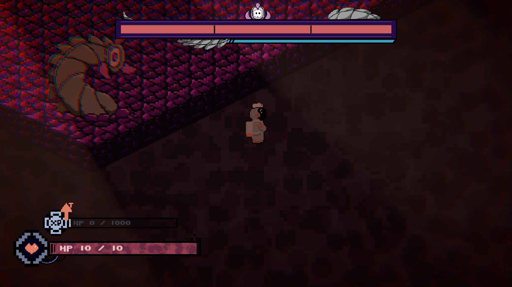
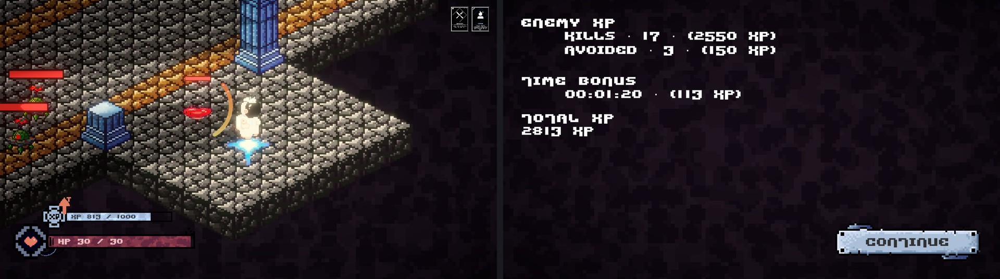

Project Context
I worked on FILE NOT FOUND as a programmer for WolverineSoft during Winter 2026. The repository begins with isometric map and camera experiments, then grows into a floor-based action game with generated routes, enemy encounters, upgrades, and a boss stage. My work focused on map generation, camera behavior, upgrade selection, and floor progression.

I wanted to document these systems because they connect the main parts of a run: authored chunks create the route, encounters determine the floor reward, and upgrade choices carry player changes into the next floor. The sections below follow those systems from their Unity assets into the code that uses them.
Procedural Floors from Authored Chunks
The map generator combines hand-authored isometric room and hall prefabs instead of building every
tile at runtime. ChunkGen selects a prefab from the pool for the
current world, and MapSpawner places each chunk after the
previous one. This let us reuse level-design work while varying the route between floors.
It took a few passes to get there. My first version in February just lined chunks up one after another, and most of the next week went into adjusting it: changing the perspective to fit the isometric art, adding smaller chunks so floors didn't feel like the same few rooms repeated, and working on the camera so it followed the player across chunk boundaries. Later I added a camera confiner so the view stayed inside the generated map.

The excerpt below shows the placement step; prefab validation and scene references are omitted.
GameObject prefab = chunkGen.GetRandomMapChunk(band);
GameObject chunk = Instantiate(prefab, chunkContainer);
chunk.transform.position = new Vector3(_chunkOffset, 0, 0);
Tilemap tilemap = chunk.GetComponentInChildren<Tilemap>();
float width = tilemap != null ? tilemap.localBounds.size.x : 10f;
_chunkOffset += width + chunkSpacing;Each chunk's width comes from its own tilemap bounds rather than a fixed size, which is what let the smaller chunks sit next to the larger rooms without overlapping or leaving uneven gaps.
Spawning Enemies
Enemy placement uses a separate tilemap layer painted by level designers. The spawner filters out cells near the entry teleporter, shuffles the remaining cells with a Fisher–Yates shuffle, and raycasts beneath candidates to reject cells over gaps.
Shuffling first and then taking cells in order gives every painted cell the same chance of being picked, without repeats:
int targetCount = Mathf.Clamp(
Mathf.RoundToInt(availableTiles.Count * fillFraction),
1,
availableTiles.Count);
Shuffle(availableTiles);
for (int i = 0; i < availableTiles.Count && placed < targetCount; i++)
{
Vector3 spawnPos = enemySpawnTilemap.GetCellCenterWorld(availableTiles[i]);
if (!IsSpawnPositionOverGround(spawnPos))
continue;
GameObject prefab = GetRandomEnemyType(enemyPool);
Instantiate(prefab, spawnPos, Quaternion.identity, parentTransform);
placed++;
}If too few candidates pass the ground check, a fallback pass uses the remaining painted cells to meet the target count. Difficulty controls the fraction of valid cells selected, so harder floors fill more of the painted area.
Floor Progression as a Coroutine
I connected map generation to the run controller. GameplayHandler
owns the floor state
and sequences the preview, gameplay, cleanup, reward screen, and next floor.
The loop took longer to settle than anything else I worked on. Between late March and the April build I reworked it several times. Early on, the flow was spread across separate scenes, and transitions between them were hard to keep in order. I eventually removed the separate gameplay scene and moved the whole sequence into one coroutine, where each step waits for the previous one to finish. Waiting for explicit confirmation at each transition keeps a reward screen or scene change from racing ahead of player input.
yield return new WaitUntil(() => CurrentState == FloorState.FloorEnd);
EnablePlayerMovement(false);
if (_playerObject != null)
_playerObject.SetActive(false);
DisableAllEnemies();
yield return AwardFloorXpAndRewards();
if (WorldProgression.IsBossFloor(_floorIndex))
{
SceneManager.LoadScene(bossSceneName);
yield break;
}
RollNextFloor();
StartCoroutine(FloorSequence());Because the whole loop is one coroutine, the boss floor is just an early exit: it loads the boss scene and stops. Every other floor rolls the next one and starts the same sequence again.
Scoring a Floor
Floor XP combines kills, enemies avoided, and a time bonus. The time component falls toward zero as the player exceeds a par time based on chunk count and difficulty. That gives combat and pace separate contributions, so clearing a floor quickly has value without making kills irrelevant.

The reward screen shows the components separately before the game opens any upgrade choices.
Building Upgrades as Reusable Assets
I did not want every card to become a special case in the menu or upgrade manager. Each upgrade is
represented by two ScriptableObject assets with the same
upgradeID. An UpgradeDisplaySO holds the card-facing
data: name, description, image, rarity, and category. An
UpgradeEffectsSO holds the gameplay side: the shared ID, stack limit, and a
list of effect objects. This lets the UI display an upgrade without knowing how its mechanics work.
Adding a New Upgrade
The manager has serialized registries for both asset types. At startup it builds dictionaries keyed by ID, warning about duplicates. To add a card, I create one display asset and one effects asset, assign the same ID to each, then add the pair to the manager's registries. If an effects asset has no matching display, it cannot be offered; if the ID is duplicated, the manager reports it instead of silently treating two cards as one.
- Create an
Upgrade Displayasset for the card title, description, image, rarity, and category. - Create an
UpgradeEffectsasset with the sameupgradeID, then set its stack limit. Use-1for no limit. - In the effects list, add one or more serializable
UpgradeEffectsubclasses and configure their fields from the Inspector. A multi-part upgrade can combine existing effect types. - Add the two assets to the
UpgradeManagerdisplay and effect registries.
Effects as Interchangeable Classes
The effects list is polymorphic: it is serialized with [SerializeReference] and stores
instances of classes derived from UpgradeEffect. Each effect implements the same small
contract. Apply changes the run, Remove reverses that change, and
GetDescription provides readable text. An effect can also opt into per-frame updates
with NeedsTick and Tick. Unity serializes the concrete subclass and its
fields into the asset, so tuning an amount or composing another effect does not require a new
menu branch.
Every effect subclass implements the same small base class:
[System.Serializable]
public abstract class UpgradeEffect
{
public abstract void Apply(UpgradeContext ctx);
public abstract void Remove(UpgradeContext ctx);
public virtual bool NeedsTick => false;
public virtual void Tick(UpgradeContext ctx, float deltaTime) { }
public abstract string GetDescription();
}
A reusable example is StatChangeEffect: each instance names a player stat and stores
additive multiplier and flat adjustments. The effect class implements the operation once, and each
asset supplies its own values. Its Remove method applies the inverse adjustments, which
makes the same effect safe to clear when a run ends.
public override void Apply(UpgradeContext ctx)
{
if (multiplier != 0) ctx.Stats.AddMultiplier(stat, multiplier);
if (flat != 0) ctx.Stats.AddFlat(stat, flat);
}
public override void Remove(UpgradeContext ctx)
{
if (multiplier != 0) ctx.Stats.AddMultiplier(stat, -multiplier);
if (flat != 0) ctx.Stats.AddFlat(stat, -flat);
}
That reversible interface also defines how an upgrade leaves a run. When an upgrade is revoked or
the player dies, the manager calls Remove for each acquired stack and clears its stack
tracking. For temporary effects, Tick gives the manager one shared update path instead
of requiring every effect to create its own MonoBehaviour.
Offering Choices
When a reward screen opens, the manager builds a pool of cards the player is still allowed to take. A card is skipped if it has no matching effects asset or has already reached its stack limit:
foreach (UpgradeDisplaySO display in allDisplays)
{
if (!_effectMap.TryGetValue(display.upgradeID, out UpgradeEffectsSO effect))
continue;
int stacks = GetStack(display.upgradeID);
if (effect.maxStacks != -1 && stacks >= effect.maxStacks)
continue;
float weight = RarityWeight(display.rarity);
pool.Add((display, weight));
}
After filtering, the manager samples choices by rarity and removes each selected card from the
temporary pool, so one screen cannot show duplicates. A maxStacks value of
-1 means unlimited; otherwise, a card stops appearing after reaching its configured
limit. Selecting a card looks up its effects by the same ID and applies each effect with an
UpgradeContext containing the player, stats, status effects, spawn manager, and game
rules.
Example: the Assassin Upgrade
The Assassin upgrade shows how small effect types can be composed into one card. Its display
asset contains the title, description, art, and rarity; its effects asset uses the same ID and stores
two PlayerUpgradeModifierEffect instances: one sets the post-dash damage multiplier and
the other sets its duration. The behavior lives in reusable effect code, while the values live in
the asset. I worked on this upgrade UI and the progression path that offers these assets after a
level threshold is crossed.

Browse the upgrade display and effect assets.
Combat and Encounter Structure
The project added melee, ranged, lobbing, shield, splitting, and plague-doctor enemies. Their different attack ranges and movement patterns make spawn composition matter, so the map generator uses world-specific weighted enemy pools rather than choosing every prefab uniformly. Teammates implemented much of the enemy behavior; my contributions centered on fitting encounters into the generated floor and reward flow.
The Worm Boss

The final encounter is a Worm boss in its own scene. Its controller is split across partial classes for attacks, burrowing, lasers, phases, presentation, and settings. That structure keeps the Unity component and serialized settings together while isolating attack logic that would otherwise make one controller difficult to navigate. The attack set expands by phase:
public enum BossAttackType
{
Melee,
Shoot,
Dig,
Laser
}Later phases also get faster. The recovery time after an attack drops from 2.0 to 1.4 to 0.9 seconds across the three phases, and in phase three the boss can chain a second attack right after the first.
Implementation Scope
The repository moves from map and camera experiments in February to the floor loop, leveling UI, enemy variety, scene flow, audio, and a dedicated boss encounter by April.

My implementation work concentrated on map generation, camera behavior, upgrade selection, and floor progression. Boss and enemy behavior was developed with the rest of the programming team. The integration boundary mattered most at floor transitions: the player state had to survive reward selection and carry into the next generated level or boss scene.
Fall 2026: Programming Director
In Fall 2026 the project moved from the R&D prototype into WolverineSoft's studio GitLab, and I
took on the role of programming director. With a larger programming team, my work shifted from
mostly writing systems myself to reviewing changes, keeping main stable, and
restructuring code so new programmers could add features without editing the same few files.
Reviewing and Merging Team Work
I handled the team's merge requests, merging 34 between September and November. When a branch had
fallen behind main, I resolved the conflicts so the contributor was not blocked.
The merged work covered:
- Core systems: a weapon framework built on
WeaponData, a save system, a basic inventory, data-driven world setup, and enemy defeat progression. - Enemies and bosses: enemy pathfinding, a grabber enemy, shield enemy reflection, boss refactoring and boss room fixes, and the Verifier mini boss for World 2.
- Weapons: a flamethrower and a time bomb, plus a fix for projectiles passing through obstacles.
- UI and tools: the pause menu, a settings menu with master volume, UI hotkeys, and an in-editor debug menu.
- Documentation: teammates' wiki pages on player movement, health, damage, camera tracking, status effects, enemy spawning, enemy archetypes, and the HUD.
Refactoring for a Larger Team
Several of my own changes were aimed at making the codebase easier to share.

The main ones:
- Upgrade behaviors: I split the large
PlayerUpgradeRuntimeinto small behavior classes behind shared interfaces (dash, on-hit, on-kill, defense, status, and conditional damage), so a new upgrade adds a class instead of growing one file. - UI manager: I added a central
UIManagerthat the HUD, tooltips, boss health bar, and floor summary screens go through, instead of each panel managing itself. - Map and audio: I reworked map stitching around a chunk catalog and lookup, and refactored the audio manager to use a pooled set of audio sources.
- Debug tools and input: I improved the debug menu controls and switched all player weapons to manual input.
Project Wiki
The repository includes a wiki in docs/, which has grown to about 35 pages, so new
programmers can learn a system before changing it.
I kept the home page and table of contents up to date and wrote or co-wrote pages on creating upgrades, the upgrade interface, the UI manager, events, audio, map generation, room prefabs, teleporters, floor progression, and importing a world tileset.
Project Source
Source files referenced above: Studio W26 R&D repository. Fall 2026 work is in WolverineSoft's private studio GitLab.